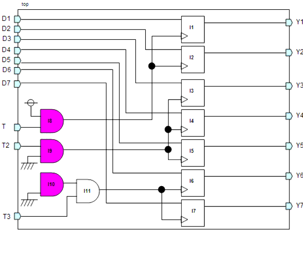
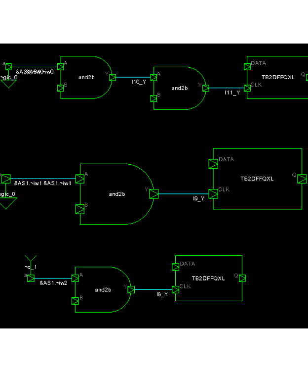

Description
This rule fires when LEDA detects a fixed value is assigned to the enable signal of clock gating cell. When the input signal of gated clock is a fixed value, the clock signal may be a fixed value.
Argument: %s1 is the hierarchy name of an illegal cell.%s2 is the hierarchy name of sequential element (flip-flop or latch) that uses the clock.%s3 - %sN is the hierarchy name of elements on the path from fix value component to the sequential element (flip-flop or latch).You can use the rule_set_parameter Tcl command to configure the below parameter:
CLK45_PRINT_PATH_INFO - You can configure this parameter to enable LEDA report all elements on path from the fix value component to the sequential (flip-flop or latch) in secondary messages.
Policy
DESIGN
Ruleset
CLOCKS
Language
VHDL/Verilog
Type
Hardware
Severity
Error
`timescale 1ns/1ps module top(Y1,Y2,Y3,Y4,Y5,Y6,Y7,D1,D2,D3,D4,D5,D6,D7,T,EN,T2,EN2,T3); input D1,D2,D3,D4,D5,D6,D7,T,EN,T2,EN2,T3; output Y1,Y2,Y3,Y4,Y5,Y6,Y7; TB2DFFQXL I1(.Q(Y1), .DATA(D1), .CLK(I8_Y)); TB2DFFQXL I2(.Q(Y2), .DATA(D2), .CLK(I8_Y)); TB2DFFQXL I3(.Q(Y3), .DATA(D3), .CLK(I9_Y)); TB2DFFQXL I4(.Q(Y4), .DATA(D4), .CLK(I9_Y)); TB2DFFQXL I5(.Q(Y5), .DATA(D5), .CLK(I9_Y)); TB2DFFQXL I6(.Q(Y6), .DATA(D6), .CLK(I11_Y)); TB2DFFQXL I7(.Q(Y7), .DATA(D7), .CLK(I11_Y)); TB2AND2XL I8(.Y(I8_Y),.A(1'b1),.B(T)); // FAIL TB2AND2XL I9(.Y(I9_Y),.A(1'b0),.B(T2)); // FAIL TB2AND2XL I10(.Y(I10_Y),.A(1'b0),.B()); // FAIL TB2AND2XL I11(.Y(I11_Y),.A(I10_Y),.B(T3)); endmoduleConfiguration
rule_deselect -all rule_select -policy DESIGN -rule NTL_CLK45Case schematic
Violations
15: TB2AND2XL I8(.Y(I8_Y),.A(1'b1),.B(T)); // FAIL
^
clk45_case.v:15: CLOCKS> [ERROR] NTL_CLK45: Do not assign fix value to
enable signal of clock gating cell top.I8
--- The sequential that uses this clock: top.I1.Q (file:
clk45_case.v, line: 6)
--- Element on path: top.&AS1.~sup1_2 (file: clk45_case.v, line:
15)
--- Element on path: top.&AS1.~iw2 (file: clk45_case.v, line: 15)
--- Element on path: top.I8.~band0 (file: clk45_case.v, line: 15)
--- Element on path: top.I1.CLK (file: clk45_case.v, line: 6)
--- Element on path: top.I1.~ff0 (file: clk45_case.v, line: 6)
16: TB2AND2XL I9(.Y(I9_Y),.A(1'b0),.B(T2)); // FAIL
^
clk45_case.v:16: CLOCKS> [ERROR] NTL_CLK45: Do not assign fix value to
enable signal of clock gating cell top.I9
--- The sequential that uses this clock: top.I3.Q (file:
clk45_case.v, line: 8)
--- Element on path: top.&AS1.~sup0_1 (file: clk45_case.v, line:
16)
--- Element on path: top.&AS1.~iw1 (file: clk45_case.v, line: 16)
--- Element on path: top.I9.~band0 (file: clk45_case.v, line: 16)
--- Element on path: top.I3.CLK (file: clk45_case.v, line: 8)
--- Element on path: top.I3.~ff0 (file: clk45_case.v, line: 8)
17: TB2AND2XL I10(.Y(I10_Y),.A(1'b0),.B()); // FAIL
^
clk45_case.v:17: CLOCKS> [ERROR] NTL_CLK45: Do not assign fix value to
enable signal of clock gating cell top.I10
--- The sequential that uses this clock: top.I6.Q (file:
clk45_case.v, line: 11)
--- Element on path: top.&AS1.~sup0_0 (file: clk45_case.v, line:
17)
--- Element on path: top.&AS1.~iw0 (file: clk45_case.v, line: 17)
--- Element on path: top.I10.~band0 (file: clk45_case.v, line: 17)
--- Element on path: top.I11.A (file: clk45_case.v, line: 18)
--- Element on path: top.I11.~band0 (file: clk45_case.v, line: 18)
--- Element on path: top.I6.CLK (file: clk45_case.v, line: 11)
--- Element on path: top.I6.~ff0 (file: clk45_case.v, line: 11)
Violation schematic